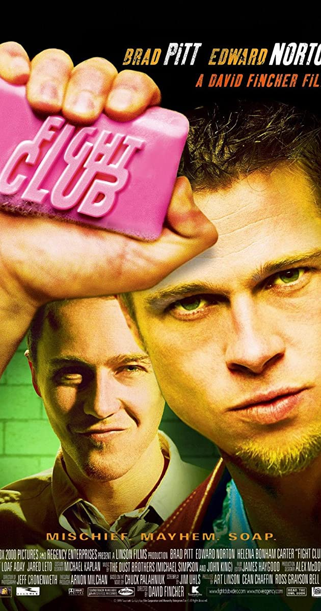

Copyright © 2020 BOSTON OUTDOOR FILM FESTIVAL. All rights reserved
Fight Club is a 1999 American film directed by David Fincher and starring Brad Pitt, Edward Norton, and Helena Bonham Carter. It is based on the 1996 novel of the same name by Chuck Palahniuk. Norton plays the unnamed narrator, who is discontented with his white-collar job. He forms a "fight club" with soap salesman Tyler Durden (Pitt), and becomes embroiled in a relationship with him and a destitute woman, Marla Singer (Bonham Carter). Palahniuk's novel was optioned by Fox 2000 Pictures producer Laura Ziskin, who hired Jim Uhls to write the film adaptation. Fincher was selected because of his enthusiasm for the story. He developed the script with Uhls and sought screenwriting advice from the cast and others in the film industry. He and the cast compared the film to Rebel Without a Cause (1955) and The Graduate (1967), with a theme of conflict between Generation X and the value system of advertising.[4][5] Studio executives did not like the film, and they restructured Fincher's intended marketing campaign to try to reduce anticipated losses. Fight Club failed to meet the studio's expectations at the box office, and received polarized reactions from critics. It was cited as one of the most controversial and talked-about films of 1999. The Guardian saw it as an omen for change in American political life, and described its visual style as ground-breaking. The film later found commercial success with its DVD release, establishing Fight Club as a cult classic and causing media to revisit the film. On the tenth anniversary of the film's release, The New York Times dubbed it the "defining cult movie of our time."

Copyright © 2020 BOSTON OUTDOOR FILM FESTIVAL. All rights reserved